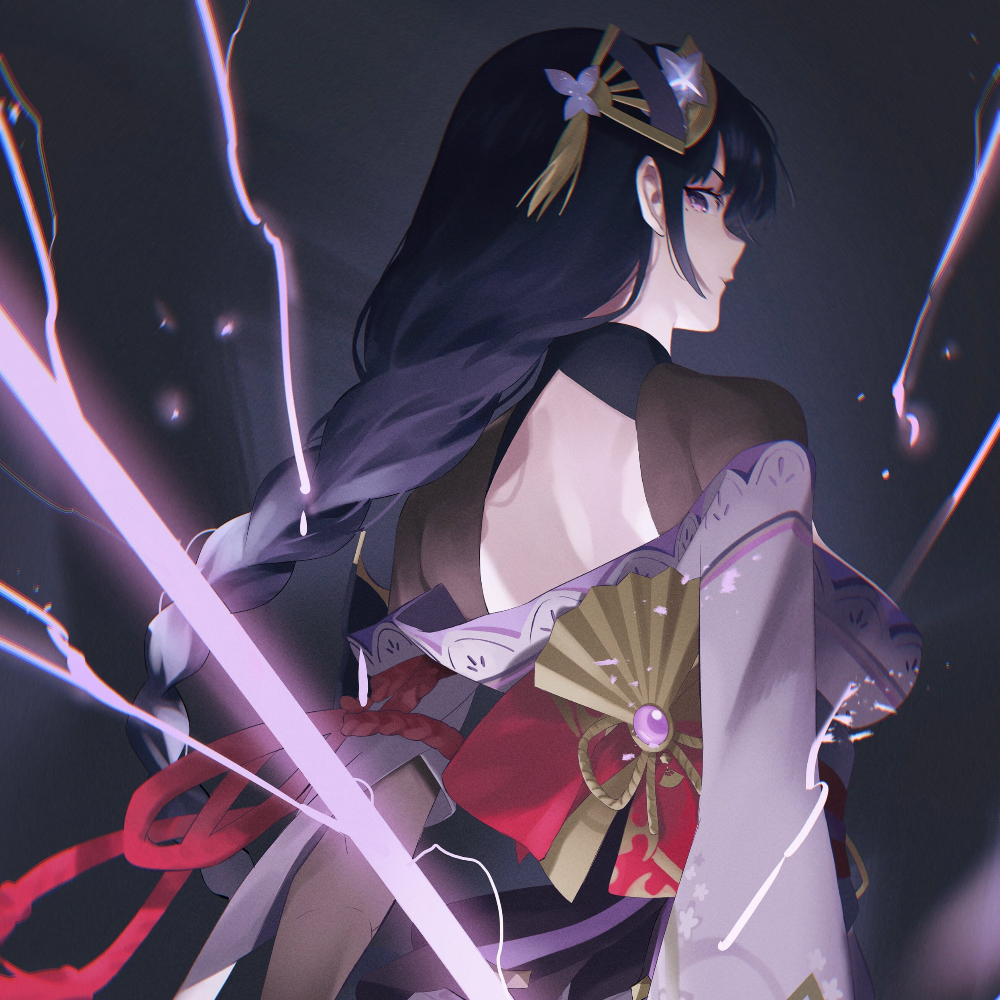
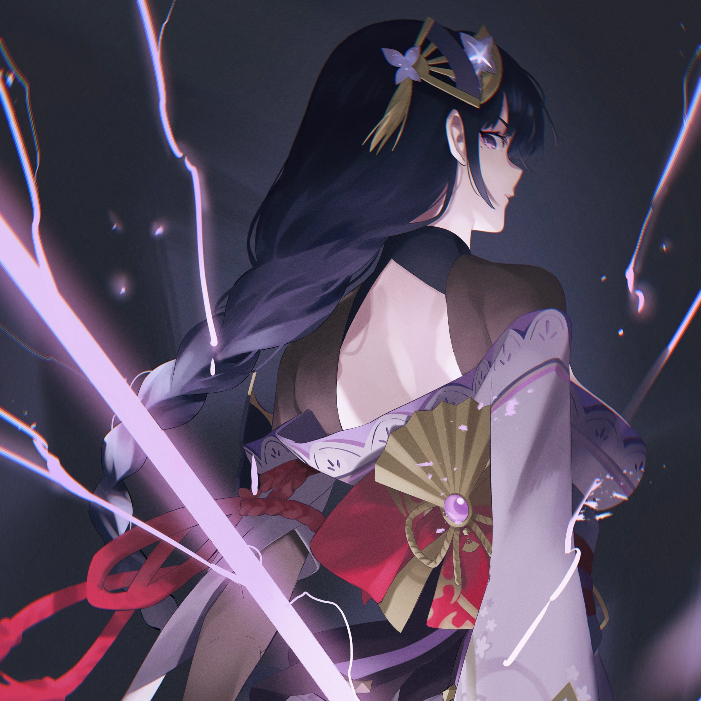
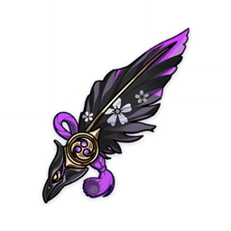
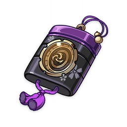
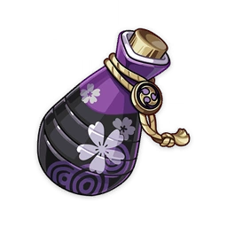
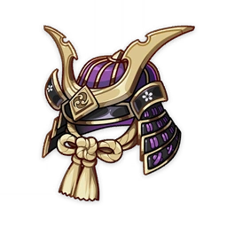
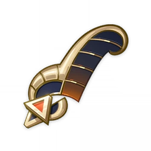
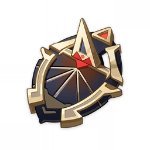
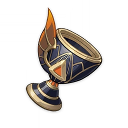
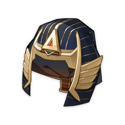

Raiden Shogun DPS VS Raiden Shogun Support DPS
 

Raiden Shogun DPS
-

Magnificent Tsuba
Legends has it that this ornate hand guard was once fitted upon a sword gifted to the oni who betrayed the Shogun.
@Flower of Life -

Sundered Feather
This was once the black feather of a certain tengu warrior, and was the treasured souvenir of an ancient swordsman.
@Plume of Death -

Storm Cage
An exquisite seal cage patterned with pansies painted upon a black backdrop, decorated with shining inlaid seashells and intricate gold-work.
@Sands of Eon -

Scarlet Vessel
An intricately-designed wine vessel that a world-famous martial artist once drank from.
@Goblet of Eonothem -

Ornate Kabuto
A sturdy and hard helmet worn as armor by a noble samurai.
@Circlet of Logos

Raiden Shogun Support DPS
-

Dreaming Steelbloom
A flower bud made of hammered dark gold. Its crimson core is wrapped by petals that shall never open.
@Flower of Life -

Feather of Judgment
This special feather was once used to weigh the hearts of the guilty, but it has since lost its original function.
@Plume of Death -

The Sunken Years
This dark-golden sundial seems to tell the ancient tale of the desert.
@Sands of Eon -

Honeyed Final Feast
A wine cup that was once used at a grand and ancient feast. It has now lost much of that luster.
@Goblet of Eonothem -

Shadow of the Sand King
This gold-inlaid headband was once used by desert priests in the days of old. They were made in imitation of one worn by a legendary ruler of the desert peoples.
@Circlet of Logos